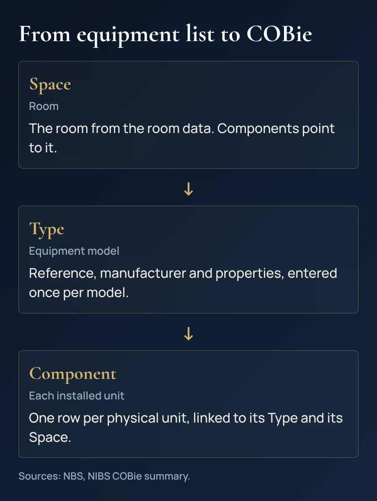

A hospital opens, and the equipment list is a spreadsheet nobody trusts. Models, serial numbers and warranties live in emails, PDFs and site folders. Facilities teams then re-key the same data into their maintenance system, months after the first patient arrives.
COBie exists to close that gap. It is a way to deliver the data about maintainable assets, not the geometry, in a structured form the owner can load into operations systems.
What COBie is (and is not)
NBS describes COBie as a non-proprietary data format for publishing a subset of a building information model, focused on asset data rather than geometry, and states plainly that a COBie file is by no means a full BIM. The NIBS summary of the standard calls it a data format and process standard that captures the maintainable assets of a facility in digital form, to shorten the delay between handover and the start of facility operations.
It was first published by the US Army Corps of Engineers in 2007, and NIBS has maintained it since 2013. Both sources also note that it can be carried as a spreadsheet or as IFC data, which is why many teams meet it first as an Excel file.

Type and Component: the part planners recognize
Two tables matter most for equipment. The Type table describes a product type, with its reference, manufacturer and properties. The Component table lists each individual installed unit and links it back to its Type, and to the Space where it sits. NBS illustrates this with a door set instance that belongs to a door set type and is located in a named room.
For a medical equipment list the mapping is natural:
- Space: the room, as defined in the room data.
- Type: the equipment model, for example one infusion pump model with its manufacturer and properties.
- Component: each physical unit placed in a room, tracked individually.
If your equipment list already separates the model from the quantity per room, you are most of the way there.
What to agree before data is produced
COBie is a collaborative effort. NBS notes that no single professional or trade holds all the information, and NIBS stresses that architects, engineers, contractors, suppliers, commissioning agents and the owner all contribute. A few decisions prevent rework:
- Which fields are required. The NIBS summary explains that each field is either always required, required if stated in the contract, or a reference, and that owners can define the fields they want. Deliverables therefore vary by contract.
- Which version and format. The standard has evolved, and the NIBS document describes version 3 as a draft at the time of writing. Confirm in the project documents what is actually required.
- Who owns each table, and when. Data is delivered at milestones, culminating in a full delivery at handover, so equipment data should be built up during design rather than assembled at the end.
- Consistent room and equipment codes. A Component can only link to a Space and a Type if the identifiers match across the model, the schedules and the spreadsheet.
Why it matters to the owner
NIBS defines maintainable assets as items the owner will manage in an operations and maintenance system, including mechanical and electrical equipment. NBS adds that the aim is to support operations, repair and replacement. For a hospital, that means the equipment list becomes the starting point of the asset register, not a document to be rebuilt after opening.
Takeaway
COBie is not extra paperwork at the end. It is the equipment list, structured early enough to survive handover. Agree the required fields, keep identifiers consistent from room data to model, and treat Type and Component as the backbone of your list.